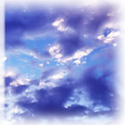

――その日の空はとても青くて。
今まで平らに見えていたこの空が、初めて丸く感じて。
地球は丸いのだと改めて感じさせられた、そんな夏の日のこと。
「まーた、そんな危ないトコに。どないしたん？」
屋上のフェンスを隔てた向こう側から、妙に明るい声が聞こえてきた。
「別に。空は青いなぁって」
空に向かって手を伸ばしてみても、決して届かない。
飛べる、とは思わないけれどフェンスを乗り越えたぶん空に近くなったような気がしていたのに。
何も、掴めない。何も、留まってはくれない。
足音が近づいて背を預けていたフェンスが揺れた。不意に温かなものが私の手を包んだ。
「何？」
俊哉はフェンスの上に座って、私が伸ばしていた手をつかんでいる。
見上げて一言言うと、小さい子のようにけらけらと笑う。
「今、お前が考えてること当てようか。」
「勝手に人の考えてること読むな」
「つれないねぇ」
そう笑いながらも俊哉は手を離さなかった。
「なんか、俺に言いたいことあんじゃねーの？」
驚いた顔をした私に向かって、またけらけらと笑う。
「ない。…こともない、かな」
どっちだよ、と俊哉は、再びけらけらと笑った。
「でも、この状態じゃ言えない」
結構、この体勢きついんだよ。
「あー。悪い悪い。やっぱ痛い？」
そう言うとフェンスの外、私がいるほうに飛び降りてきた。
そのまま腰を下ろすと私の手を引いて座れよ、とだけ言った。
アンタのほうが危ないじゃん、と出かかった言葉を制して俊哉に従う。
隣に座っても俊哉は、何の話とは聞かない。私が話し始めるのを待っているらしかった。
「…どうしたらいいのか、わかんない」
「うん」
「なんで、うちらが巻き込まれるのかもわかんない」
「だよな〜」
「だいたい、六ヵ年だっていうから入ったのに」
「うん」
「ねえ、俊哉。なんで、そんなに平然としてられんの。」
「そう見える？」
悲しそうな目をして俊哉は笑った。
嗚呼。傷つけたいわけではないのに。
ただ自分でも、どうしたらいいのかわからなくなっていた。
三年間という短いようで長い月日を過ごしてきた私達の学校。
中高一貫校で、少人数制で、先輩後輩の縦割りが親密な私達の学校が。
――今年度で、六ヶ年教育を廃止。
中高一貫校で少人数制で財政が厳しいというのもわからなくはない。その理屈は理解できる。
学校がつぶれるという噂が立ち始めたのは六月頃だった。
それが、楽しい夏休みに入るはずだった一ヶ月前の始業式。その噂は真実になった。
大人たちは私たちに生徒に知られないよう水面下で、学校を閉鎖するということで話すすめていたのだ。
クラスの半数が他校受験の道を選んだ。私もその一人だった。
「ごめ…」
「ん。気にしてない」
「もーわけわかんない…残された子達はどうなるの！一年生達は！？せっかく、ここに入りたい一心でツライ受験を乗り越えてきたのに！」
一方的に、言葉が出てきてしまう。
悪いのは、俊哉じゃないのに。親でも、先生でもない。
割り切れない私のせいだ。どうしようもないことぐらいわかっている。理解、できている。
「悪いのは、誰のせいでもない。そうだろ？」
一瞬心を読まれたのかと思った。
「学校が、つぶれるのも経営が行き詰ってるせいであって、奈緒のせいじゃない。しいて悪役にするなら、学園でしょ。」
違うか？と私ほうに目をむけ俊哉はつけたした。
「違わない…。でも…さ？俊哉は…」
割り切れてるの？と聞く前に俊哉は言った。
「俺だってさ、納得いってないよ。いきなり、つぶれますなんてさ。でももう決まったことだしさ。俺に何ができるわけじゃないし」
「それでも…せっかく、仲良くなれて、問題だって解決して、やっと…分かり合えるようになったのに」
「言ったけど俺らがどうこうできる問題じゃなくなってるんだよ。納得いかなくてもさ、割り切らなきゃしょうがないんだよ。それに」
それに、と俊哉は言葉を切った。
「それに…なに？」
私が尋ねると、俊哉は左手を空へと伸ばす。
必然的に握られている私の右手も空へとあがる。
「地球は丸いし。空は続いてるし。ここにいようと、国外にいようと繋がってる。」
「…ぷっ。あはは！くっさいセリフだなぁ」
そういって笑うとうるせぇ、と言われてしまった。
顔が見たいと思ったが、自分の右手が邪魔をしているため表情を伺うことはできなかった。
俊哉なりに励ましてくれているのだろうと、そう思うことにした。
「繋がっている、かぁ。いい言葉だね。ま、その辺の学校よりは絆は深いかな」
そう言って、笑ってみた。うまく笑えていなかったかもしれない。それでも、よかった。
「寂しくなったら、こうやってさ。手ぇ伸ばしてみればいんでね？いまどきメールだって電話だってあるしな」
「そだね。あー同窓会もやりたいかも」
「それ、賛成」
そんな話をしながら、過ごした夏の日。
「奈緒ちゃん〜」
振り返ると高校の友達の姿。
「何やってんの？手なんか伸ばして」
「ん〜。寂しくなったから」
「なんだそれ」
そう言って彼女は笑った。
手を伸ばしたら、あのぬくもりをつかむことができるような、そんな気がした。
まぁ、俊哉が死んでいるわけではないし、空はどこまでも続いているし、世界が滅びない限りあえるだろう。
今日、授業が終わったら電話してみるか。
「さあね」
「あー。そういうこと言うの？せっかく呼びに来てあげたのにー。行っちゃうからね」
「え、ちょっと待ってよ！」
「やーだよ！」
私は笑いながら、彼女の姿を追った。
さぁ、一歩を踏み出そう。
この広い青空の下、みんなが笑って過ごしていることを祈って。